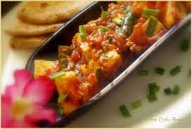

Chilli Paneer

Description
One of the favorite dishes from Indian Chinese cuisine is Chilli Paneer which is a vegetarian version of Chilli Chicken.
In a typical Chilli Paneer recipe, the fried paneer cubes are tossed in a sweet, sour, spicy sauce. The paneer cubes
can be coated with flours or batter coated and deep fried.
The dry version of chilli paneer is served as a starter or appetizer snack.
The gravy version is had with steamed rice or noodles. The semi-dry version can be had as an appetizer.
This semi-dry chilli paneer recipe gives a truly restaurant style taste and flavor.
Ingredients
- 200g Paneer
- 2 tablespoons cornflour
- 1/4 teaspoon black pepper
- 2 tablespoons olive oil
- 1 small green cayenne chilli
- 1 tablespoon grated ginger
- 1 tablespoon minced garlic
- 1 small red capsicum, trimmed, deseeded and cut into square pieces
- 1 tablespoon light soy sauce
- 1 tablespoon white vinegar
- 1 1/2 teaspoon raw sugar
- 1 teaspoon hot chilli sauce
- 1/2 teaspoon red chilli powder
- 2 teaspoons cornflour
- 1/2 cup water
- Salt to taste
Steps
-
To prepare the paneer, add paneer cubes, cornflour, salt and pepper in a medium bowl. Toss to coat the paneer evenly with the cornflour.
-
Heat a tablespoon of oil in a frying pan on medium. Add the coated paneer cubes to the pan and fry until each side is golden brown and
crispy, turning constantly with a butter knife.
-
To prepare the sauce, add soy sauce, vinegar, sugar, Sriracha and chilli powder to a bowl. Mix well and set aside.
-
Heat a tablespoon of oil in a small wok on high. Add green cayenne chilli, ginger, garlic and onion.
Stir-fry for a minute or two until onion is glazed. Add the capsicum and spring onion. Stir-fry for another minute.
-
Add the prepared sauce. Mix well. Mix cornflour with the water and add to the wok. Add the paneer and mix well.
Reduce heat to medium-low and cook for 1-2 minutes until the sauce thickens and the paneer is heated through.
-
Remove from heat. Season with salt if required. Garnish with extra spring onion and serve hot with rice.